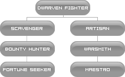

Human

Fighters
Warlord
O Warlord é a classe de ataques em área, ele consegue atacar múltiplas targets ao mesmo tempo usando como arma as lanças (poles). É uma classe muito resistente e progride de nível numa velocidade considerável devido as suas habilidades de ataque em massa. Possui também boas habilidades para se recuperar quando estiver com a vida extremamente baixa. Seu forte é mesmo o PvE, pois no PvP não tem muito destaque devido ao baixo ataque das lanças em relação às outras armas. Numa Siege, se ele passar por despercebido, pode causar danos consideráveis à linha de frente.
Gladiator
O Gladiador é especialista em combate com duas espadas. É considerado uma classe forte para 1vs1, por isso é muito utilizado nas Olimpíadas. Contudo, pela quantidade de skills, torna-se uma classe difícil de jogar no PvP. Para PvE é uma classe relativamente balanceada, já que usa vários tipos de armas, como dual-swords, pole, blunt e bow.
Paladin
Paladins são especializados na defesa e proteção dos companheiros, também conhecidos como Tanker. É uma classe exclusivamente defensiva, por isso o uso de um escudo (shield) é mais do que obrigatório. Os paladinos possuem habilidades fortes contra monstros do tipo Undead e uma defesa considerável. É uma classe mais do que necessária numa party warfront nas Sieges. Já no PvP, é uma classe mais defensiva do que ofensiva.
Dark Avenger
Dark Avengers são cavaleiros que utilizam de magias obscuras e dispõe de uma defesa muito boa. É considerado um tanker ofensivo, porque possui uma defesa semelhante à dos Paladins e ainda dispõe de boas habilidades ofensivas. Assim como o Paladin, o uso de um escudo (shield) é obrigatório para o bom uso dessa classe. Os Dark Avengers contam com o auxilio de panteras negras, que tem um ótimo ataque e podem ser muito bem utilizadas em 1vs1.
Treasure Hunter
É uma classe do tipo dagger, que depende exclusivamente de uma adaga para matar. Treasure Hunters possuem uma variedade muito maior de habilidades do que as outras raças, possuem um status bem equilibrado e uma taxa de danos críticos considerada alta de acordo com as Dyes aplicadas. Excelente para PvP, mas depende do jogador conhecer bem as suas skills para se tornar um excelente assassino. Uma habilidade bastante peculiar desta classe, é a skill Stealth que lhe permite andar no meio de mobs agressivos sem ser atacado.
Hawkeye
É uma das classes mais populares do tipo arqueiro. Possui um status bem balanceado e habilidades bem valorizadas durante um PvP, pois o seu dano é alto, principalmente em ataques críticos com um arco (bow). O Hawkeye pode vir a ser a melhor opção em arqueiros na sua terceira ocupação, já que é mais balanceado que os demais.
Mages
Sorcerer
É uma classe de mago especialista no elemento fogo. Dentre os magos é uma classe muito bem equilibrada e a mais fácil de se jogar. Possui como base, ataques de fogo e alguns ataques no elemento terra, além de muitas skills em área, o que facilita em PvE seja sozinho ou em party. Para PvP deixa um pouco a desejar já que possui apenas 2 ou 3 skills com danos em uma única target.
Necromancer
Necromancer é especialista em ataques negros (dark attacks). É um pouco de tudo, summoner, damage dealer (Alta taxa de ataques), e debuffer (Especializado no enfraquecimento do oponente) e é muito utilizado como mago, mesmo sua classe não ser considerada como um mago no Lineage 2. É uma classe com muitas habilidades fortes, sendo muito popular entre os jogadores devido a essa diversidade que a classe apresenta. No PvP se bem jogado é difícil de morrer, contudo a quantidade de buffs com resistência a Dark acabam comprometendo o seu dano nos oponentes.
Warlock
Especializado na criação de summons. É muito popular entre as jogadoras de Lineage 2 porque possui summons em forma de pequenos gatos. Embora pequenos, os summons do Warlock são os mais equilibrados comparado aos summons de outras raças, e além disso possuem boas skills também. Os cubos do Warlock dentre as demais classes do gênero, possuem ótimas propriedades que são: paralizar o inimigo instantâneamente e lançar uma rajada de vento com um poder de dano.
Bishop
A classe que possui as melhores habilidades de cura. O Bishop é especializado na revitalização de seus companheiros de party e na ressurreição. Dois pontos fortes nesta classe é que o bishop pode reviver todos os integrantes da party e aliança, ao mesmo tempo, e ainda recuperar parte da experiência perdida com a morte. É uma classe exclusivamente passiva e essencial para Raid Bosses, Sieges e Mass PvP. Suas únicas habilidades de ataque que possui são para monstros do tipo Undead e possui apenas uma única skill de ataque para os demais oponentes.
Prophet
Conhecido como buffer, O profeta possui os melhores e mais completos buffs do jogo. É extremamente dependente de um pet ou party para subir de nível porque não possui muito dano e apenas uma única habilidade de ataque, além disso, possui magias de enfraquecimento, sleep e dryad root, mas sua especialidade é exclusivamente para buffs.
Elf

Fighters
Temple Knight
O Temple Knight é outro tipo de tanker disponível no jogo e possuem boa defesa mágica e contam com o auxilio de cubos que são uma espécie de criaturas mágicas que durante um combate curam e trazem benefícios para o seu mestre. Em relação às outras classes do tipo tanker, o Temple Knight é a mais fraca no ataque, porém possui a melhor taxa de defesa com escudo (Shield Defense Rate) que os demais tankers. Seu ponto forte é os cubos que possui e as magias no combate de monstros undead.
Swordsinger
É uma espécie de classe híbrida, é um guerreiro porém sua especialidade são buffs poderosos. É uma classe de grande importância devido as suas canções atribuírem excelentes habilidades à sua party., No combate, seu ataques são ruins, mas suas habilidades de auxilio compensam, pois pode atuar como um tipo de tanker. O Swordsinger no L2 Elite, assim como o Dark Avenger, também possui uma pantera negra (Black Panther).
Plains Walker
O mais veloz dos daggers. Possui boa destreza em função do seu status inicial. Em relação aos outros tipos de daggers, é o que possui maior taxa de críticos e acerta mais skills, porém é também o dagger que tem menor ataque físico. Uma das habilidades únicas dessa classe é o Chameleon Rest que permite ao Plains Walker descançar cercado de monstros sem ser percebido.
Silver Ranger
O mais veloz dos arqueiros. É um dos favoritos personagens dos jogadores pela velocidade no ataque e na corrida que esta classe possui. Os elfos são mestres em destreza e velocidade, o que torna o Silver Ranger uma das primeiras escolhas entre os arqueiros. O Silver Ranger possui menos P. Atk. em relação às outras classes do gênero porém possui um Atk. Speed muito desenvolvido podendo ser quase duas vezes maior que a de um arqueiro dark elf.
Mages
Spellsinger
O Spellsinger é uma das melhores classes do tipo mago. Possui a maior velocidade de ataques mágicos (Casting Speed) do jogo, além de ataques críticos mágicos constantes. Os elfos são protegidos pela deusa Eva, deusa da água e da pureza, e por este motivo o Spellsinger possui magias baseadas no elemento água (Water Attacks) e algumas do tipo santo (Sacred). Normalmente é a principal escolha de muitos jogadores, já que a grande maioria dos mobs do Lineage 2 possuem vulnerabilidade de ataques santos.
Elemental Summoner
O Elemental Summoner é classe elfica especializada na invocação de criaturas, no caso dos elfos, essas criaturas são unicórnios. Os summons do Elemental Summoner são especializados em magias de distância podendo atingir vários alvos ao mesmo tempo e com um grande poder, mas possuem um ataque físico razoável. Os cubos do Elemental summoner são especializados na cura e fortalecimento do invocador.
Elven Elder
Esta classe é semelhante a um healer porém com menos skills de cura, seu ataque se resume em apenas uma única skill, contudo é uma classe que possui um casting speed muito elevado e tem a habilidade para recuperar a mana de sua target. Possui alguns buffs importantes e é a única classe no jogo que tem uma skill para transportar uma party inteira para a cidade mais próxima.
Dark Elf

Fighters
Shillien Knight
Uma classe imponente é o que o Shillien Knight é. Sua especialidade é o enfraquecimento tanto da defesa como do ataque do inimigo, e além disso pode criar estados negativos nele como deixá-lo sangrando ou em envenenado. É considerado o melhor tanker para PvP, pois assim como o Temple Knight, esta classe possui o auxilio de cubos, porém os poderes dos seus cubos estão focalizados no enfraquecimento do inimigo e vantagem do seu mestre. O Shillien Knight é o tanker de menor quantidade de vida e defesa, mas isso não chega a ser uma fraqueza por completo se bem jogado com ele.
Bladedancer
O Bladedancer é o guerreiro especializado no combate com espadas duplas. É uma espécie de classe híbrida, é um pouco fighter com alguns debuffs em área e também um pouco buffer para uma party, já que possui excelentes danças fortalecem tanto guerreiros como magos. Isso faz do Bladedancer um dos melhores companheiros numa party, mas não chega a ser um bom personagem para PvP ou PvE quando se está sozinho.
Abyss Walker
É o dagger de menor destreza e velocidade, mas em compensação possui o maior P. Atk dentro os demais daggers no jogo. O Abyss Walker por possuir o maior ataque, seus críticos são maiores, porém sua critical chance é um pouco baixa, dessa forma, ele não é um dos favoritos pelos jogadores em classes deste gênero.
Phantom Ranger
O Phantom Ranger possui uma grande variedade de skills e o impacto das suas flechas é superior comparado às outras classes, no entanto sua velocidade é comprometida devido ao status inicial dos Dark Elfos. A chance de críticos e a velocidade do seu ataque pode ser um pouco abaixo em relação às outras classes do gênero, mas a força do seu ataque e skills pode compensar até mesmo porque quando ele acerta um crítico, é devastador.
Mages
Spellhowler
O Spellhowler é um dos mais poderosos magos, domina mágias do elemento vento e dark que podem fazer toda a diferença, tanto para PvP quanto para PvE. É o mago de maior M.Atk do jogo pelo fato dos Dark Elfos possuírem o status inicial de maior INT dentre as outras raças. O Spellhowler é uma classe que possui muitas skills de ataque com um poder de fogo muito grande, porém em contrapeso seu casting speed costuma ser mais lento do que os demais magos.
Phantom Summoner
O Phantom Summoner é o mestre em invocar criaturas da escuridão. Suas criaturas das sombras têm como atributo básico a DEX, como por exemplo o Soulless que é o summon mais veloz do jogo. O Phantom Summoner invoca as criaturas das mais variadas espécies que são: Sillhouette (Uma espécie de maga que pode remover a vida do inimigo para preencher a sua própria), Shadow (O summon mais equilibrado da classe, ele pode recuperar sua vida enquanto bate no oponente devido a habilidade passiva que possui), Soulless (Possui a habilidade de lançar uma nuvem de veneno em área que pode ser usada para atrair monstros distantes, e também a habilidade de explodir corpos e causar danos em área) e por fim o Nightshade (este é o grande trunfo da classe, é um summon que possui a maior vida dentre os summons, ele tem o poder de causar estados negativos na defesa física e mágica do oponente e serve de certo modo como um healer para o seu mestre).
Shillien Elder
A principal função do Shillien Elder é assistir os Bishops da party. Essa classe possui um grande poder para recuperar a mana e também de auxiliar o Bishop nas curas. Contra monstros, a suas habilidades são válidas apenas contra monstros do tipo undead e ainda não são tão boas as habilidades. O jogador que optar pelo Shillien Elder deve saber que está classe possui apenas uma única skill de dano mágico e nada mais.
Orc

Fighters
Destroyer
O Destroyer literalmente é o personagem que é o nome da classe: "Destruidor". O Destroyer é o personagem que pode atingir o maior ataque físico (P. Atk.) e o maior HP do jogo. Suas habilidades são mortais, o que faz dele uma das melhores classes dos Orcs. O Destroyer possui muitas skills de fortalecimento quando sua vida está baixa e apesar dessas skills de fortalecimento durarem poucos segundos, é o que basta para um jogador experiente dizimar uma frente de batalha no PvP, matar um Raid Boss ou matar uma grande quantidade de mobs facilmente. O Destroyer é um oponente de respeito no PvP, Raid Boss e PvE, suas únicas desvantagens são sua velocidade de corrida e a sua defesa mágica.
Tyrant
O Tyrant é uma classe bem particular em Lineage 2. É o único especializado em usar as Fists, o que pode ser uma vantagem pois as Fists geralmente custam mais barato em função de não haver tanta procura do item. É um personagem que utiliza tanto a força física quanto a agilidade no combate, podendo atingir a maior velocidade de ataque (Atk. Speed) do jogo por alguns instantes, além de correr muito rápido.
Mages
Overlord
O Overlord é uma das classes mais poderosas da raça orc, pois é a única classe que pode curar o CP de uma aliança ou de quem estiver em sua target, além disso é a classe que mais possuí debuffs em área no jogo. Tem uma excelente defesa mágica e física, porém o seu casting speed deixa a desejar. A inclusão de Overlords num clã pode garantir a vitória com toda certeza, por isso são indispensáveis em Sieges e Mass PvP, mas apesar dessas características, no PvE, o Overlord pode precisar de assistência para progredir de níveis.
Warcryer
O Warcryer é um buffer de party que possui a maioria dos buffs importantes para uma caçada. Possui algumas habilidades com efeitos semelhantes às magias do Prophet. Essa classe possui algumas habilidades na cura e regeneração acelerada da vida dos seus companheiros, e além disso tem um bom ataque físico com um Stun muito potente e também uma skill que suga o HP do oponente, recuperando o seu próprio HP, lhe dando uma certa vantagem na recuperação de sua vida. Sem dúvidas o Warcryer é uma das melhores classes para suporte no jogo.
Dwarf
Fighters
Bounty Hunter
O Bounty Hunter é treinado no uso do Spoil e para isso aprende algumas habilidades como Fake Death (Fingir de morto), para confundir os inimigos e escapar de enrascadas. Não possui nenhum summon que o ajude nas batalhas (o que pode ser corrigido se usar algum pet) mas é muito resistente e tem um bom HP. Sua principal função é caçar itens raros, que dificilmente outros jogadores poderiam obter. Apesar disso, essa classe se resume apenas em spoilar os mobs no jogo para adquirir algum item importante, nada além disso.
Warsmith
O Warsmith é a peça chave para o sucesso numa Siege, pois ele pode construir summons de batalha imensos, usados nas Sieges para quebrar os portões e os muros do castelo. Diferente do Bounty Hunter, o Warsmith não possui a habilidade de se fingir de morto. Outra particularidade do Warsmith é a sua habilidade de construir itens através de receitas (recipes) disponíveis no jogo.
Kamael

Male
Berserker
Possuidor de um forte ataque físico e mágico. O Berserker pode regenerar e aumentar o HP dos companheiros de party. Possui várias habilidades para enfraquecer e paralizar o oponente como o Shoulter Charge que deixa o inimigo sob efeito de Stun. Além disso, nesse estágio ele aprimora suas habilidades de defesa, porem não chega a ser um personagem bom nisso. No PvP pode causar bons danos, mas é muito vulnerável em função da defesa que tem.
Soulbreaker
É uma espécie híbreda de mago de-buffer com Assassin. O Soulbreaker possui habilidades muito peculiares, ele pode fortalecer os companheiros de party que sejam Kamael, e pode atacar multiplos alvos com magias ou skills físicas. Essa classe pode tirar proveito das Death Marks que os outros colegas Kamael deixam nos oponentes e usar uma skill que danifica somente os oponentes com a marca, ignorando qualquer defesa.
Female
Arbalester
A Arbalester pode seduzir o oponente até suas armadilhas, assim como detectar e desarmar armadilhas de outros jogadores. É uma classe archer que não possui poder significativo num PvP. É muito eficiente contra monstros, podendo desenvolver várias estratégias com suas armadilhas e debuffs.
Soulbreaker
É uma espécie híbreda de mago de-buffer com Assassin. O Soulbreaker possui habilidades muito peculiares, ele pode fortalecer os companheiros de party que sejam Kamael, e pode atacar multiplos alvos com magias ou skills físicas. Essa classe pode tirar proveito das Death Marks que os outros colegas Kamael deixam nos oponentes e usar uma skill que danifica somente os oponentes com a marca, ignorando qualquer defesa.
Last Sub
(disponível somente para Kamaels com 2 subclasses completas)
Inspector
É uma classe secreta que só pode ser obtida quando o personagem estiver na escolha da 3ª Subclasse. É uma espécie de Mago de-buffer que também possui habilidades no combate e defesa física, também possui alguns buffs poderosos, pode-se dizer que é uma espécie de "tudo em um". Suas habilidades de combate são "apelonas" por assim dizer, principalmente se tratando dos seus de-buffs, no caso de terem êxtio.
Judicator
Muito pouco foi revelado sobre esta classe, mas além de poder se transformar na forma final do Kamael, ela possui a habilidade de paralizar os inimigos que a atacam.